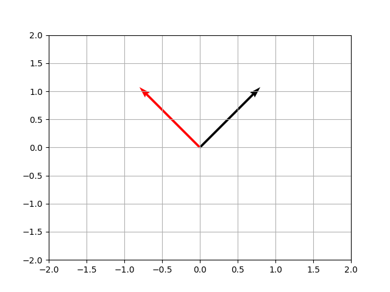
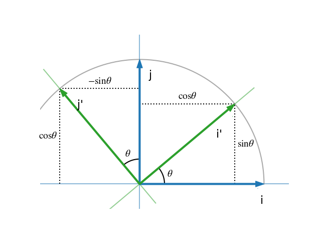
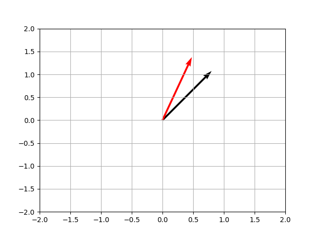
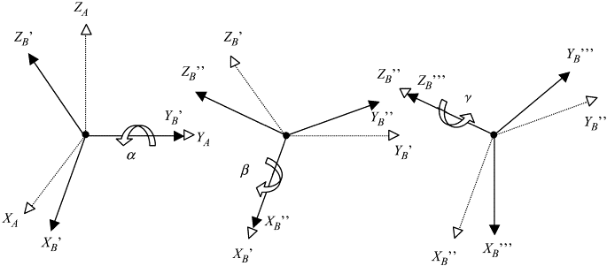
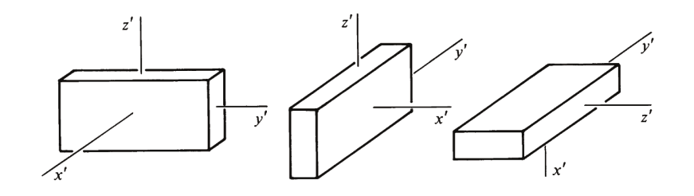
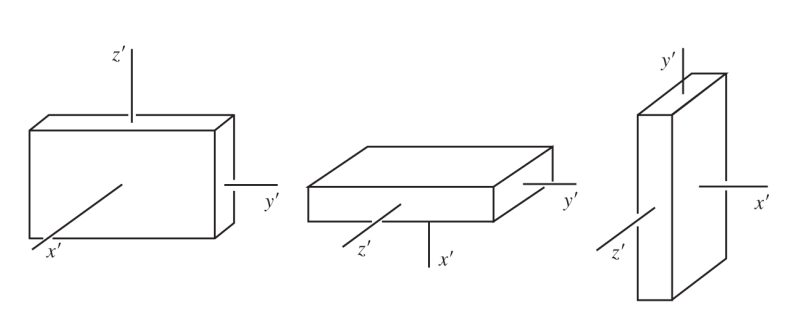

Döndürme (Rotation)
Herhangi bir boyutta döndürme işlemi, yani bir noktayı ya da bir vektörün yönünü değiştirmek lineer cebirsel bir matris çarpım işlemi üzerinden hesaplanabilir. Daha önce [2]'de gördüğümüz baz değiştirme tekniği burada da geçerli. Baz değiştirme de iki boyutta $i$,$j$, ya da $[0,1]$ ve $[1,0]$ vektörlerinin yeni bir yöne işaret etmesi ve bu değişim sırasında ilk uzaydaki şeklin bu değişimle beraber değişmesi olarak görülebilir. Bu yeni bazı kolonlarında taşıyan şey ise bir nevi döndürme matrisi $R$'dir.
Not: Bu matrisin her zaman dikgen olacağını görmek zor değil, çünkü yamultma, kaykılma olmadan, direk $i,j,k$ baz vektörlerini belli bir şekilde yeni yerlere taşıyoruz, bu taşıma sonucunda tabii ki yeni yerlerinde de bu baz vektörler birbirine dik olacaktır, ve onları içeren döndürme matrisi de ortonormal, dikgen halde olacaktır.
Eğer bir vektörü 90 derece saat yönü tersine döndürmek isteseydik, yeni baz nasıl olurdu? $i$'yi kaldırıp tam yukarı işaret ettirmek lazım, o zaman $[0,1]^T$, $j$ ise aynı şekilde sola yatırılmalı, $[-1, 0]$. Rotasyon matrisi,
$$ R = \left[\begin{array}{rr} 0 & -1 \\ 1 & 0 \end{array}\right] $$
v = np.array([1,1])
plt.quiver(0,0,v[0],v[1],scale=5)
R = np.array([[0, -1],[1,0]])
vnew = np.dot(R, v)
plt.quiver(0,0,vnew[0],vnew[1],scale=5,color='red')
plt.xlim(-2,2)
plt.ylim(-2,2)
plt.grid(True)
plt.savefig('phy_072_rot_04.png')

Doksan derece dönüş görülüyor.
Peki doksan derece değil $\theta$ kadar bir saat yönü tersi döndürüşü nasıl temsil edilebilirdi? Yine bazın nereye gittiğine bakıyoruz,

Eğer $i$'yi kaldırıp $i'$ haline getirirsek bu yeni vektörün $[\cos\theta,\sin\theta]$ durumuna gelmesi, $j$'yi döndürüp $j'$ yapınca $[-\sin\theta,\cos\theta]$ haline gelmesi demektir. Dönüş matrisi,
$$ R = \left[\begin{array}{rr} \cos\theta & -\sin\theta \\ \sin\theta & \cos\theta \end{array}\right] $$
theta = np.deg2rad(20)
v = np.array([1,1])
plt.quiver(0,0,v[0],v[1],scale=5)
R = np.array([[np.cos(theta), -np.sin(theta)],[np.sin(theta),np.cos(theta)]])
vnew = np.dot(R, v)
plt.quiver(0,0,vnew[0],vnew[1],scale=5,color='red')
plt.xlim(-2,2)
plt.ylim(-2,2)
plt.grid(True)
plt.savefig('phy_072_rot_05.png')

Euler Acıları (Euler Angles)
Bir katı gövdenin, ya da aeoridinamik simülasyonda uçağın, bir arabanın hangi yöne baktığını (orientatıon) temsil etmek için Euler açıları yaygın şekilde kullanılır. Bu açılar herhangi bir, ne kadar çetrefil olursa olsun dönüşün, peşpeşe, her eksen etrafında uygulanabilecek üç tane ardı ardına yapılan döndürme ile temsil edilebileceğinden hareketle bulunmuştur. Mesela altta ardı ardına YXZ eksenleri üzerinde yapılan döndürme gösteriliyor.

Genelde kullanım kalıbı ZYX ya da ZXZ üzerinden yapılır. Altta ZXZ ornegini gorecegiz. Herhangi bir eksen etrafındaki dönüş tek bir dönüş matrisi ile gösterilebilir, mesela Z etrafındaki $\phi$ kadar bir dönüş $D$ matrisinde olsun [1, sf 153],
$$ D = \left[\begin{array}{rrr} \cos \phi & \sin\phi & 0 \\ -\sin \phi & \cos\phi & 0 \\ 0 & 0 & 1 \end{array}\right] $$
O zaman $z$ ekseni etrafındaki bir dönüş
$$ \bar{x}' = D \bar{x} $$
yani $\bar{x} = [x, y, z]$ döndürülerek $\bar{x}' = [x', y', z']$ elde edildi.
Şimdi $x'$ ekseni etrafında $\theta$ kadar döndürüyoruz, bunu $C$ ile yapalım,
$$ C = \left[\begin{array}{rrr} 1 & 0 & 0 \\ 0 & \cos\theta & \sin\theta \\ 0 & -\sin\theta & \cos\theta \end{array}\right] $$
$$ \bar{x}" = C \bar{x}' $$
Ve son olarak $\bar{x}" = [x",y",z"]$ içindeki $z"$ etrafında $\psi$ kadar döndürüyoruz, bunu $B$ ile yapalım,
$$ B = \left[\begin{array}{rrr} \cos \psi & \sin\psi & 0 \\ -\sin \psi & \cos\psi & 0 \\ 0 & 0 & 1 \end{array}\right] $$
$$ \bar{x}_f = B \bar{x}" $$
Tüm bu matris çarpımlarını tek bir satırda
$$ \bar{x}_f = B C D \bar{x} $$
ile yapabilirdik, ya da
$$ \bar{x}_f = A \bar{x} $$
olarak ki $A = BCD$ olmak üzere.. Bu $A$ matrisinin içeriği neye benzerdi? Cebirsel olarak $BCD$ çarpımını gerçekleştirince,
$$ A = \left[\begin{array}{ccc} \cos\psi\cos\phi-\cos\theta\sin\phi\sin\psi & \cos\psi\sin\phi + \cos\theta\cos\phi\sin\psi & \sin\psi\sin\theta \\ -\sin\psi\cos\phi-\cos\theta\sin\phi\cos\psi & -\sin\psi\sin\phi + \cos\theta\cos\phi\cos\psi & \cos\psi\sin\theta \\ \sin\theta \sin\phi & -\sin\theta\cos\phi & \cos\theta \end{array}\right] $$
Not: dikkat edelim, eksenlerde ardı ardına yapılan rotasyonların birleşimi sırabağımsız değil, mesela alttaki iki döndürme, aynı temel döndürmeleri yapıyor olsalar da farklı sıralarda yaptıkları için farklı sonuçları veriyorlar,


Tabii üstteki durum lineer cebirin içeriğiyle uyumlu, çünkü matris çarpımı da sırabağımsız değildir.
Paket
Kütüphane scipy içinde faydalı kodlar var, mesela scipy.spatial.transform
içinde,
from scipy.spatial.transform import Rotation as R
r = R.from_euler('zyx', [90, 45, 30], degrees=True)
print (np.round(r.as_matrix(),2))
[[ 0. -0.71 0.71]
[ 0.87 -0.35 -0.35]
[ 0.5 0.61 0.61]]
Diferansiyel Form, Sayisal Cozum
Kaynaklar
[1] Safko, Classical Mechanics
[2] Bayramlı, Lineer Cebir, Giris
[3] Widnall, 16.07 Dynamics
Yukarı